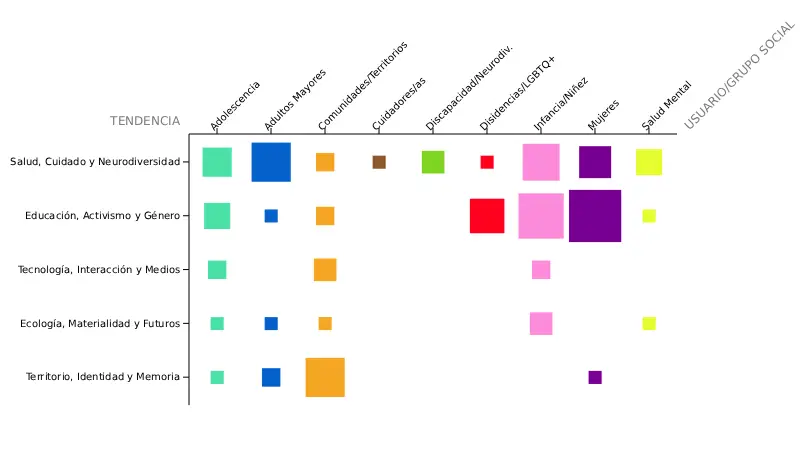
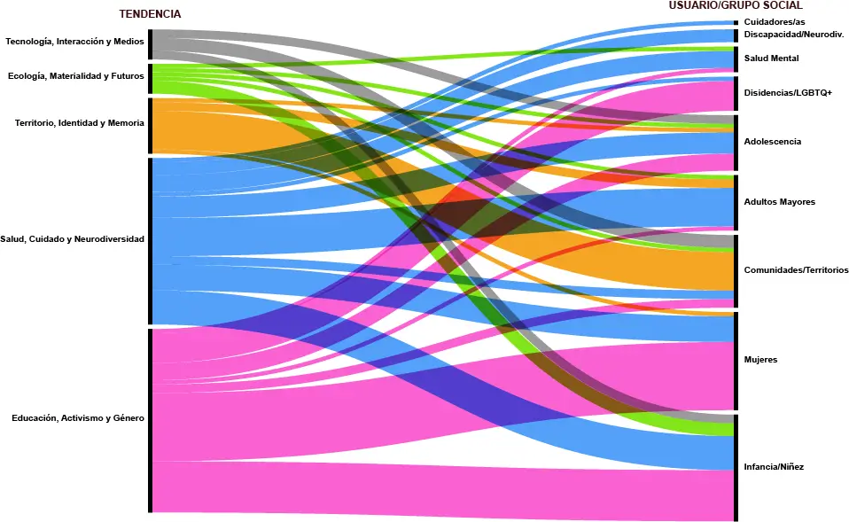

Un proyecto de título de Diseño no es solo un ejercicio académico. Es también una declaración de intenciones: una elección sobre a quién se diseña, desde qué lugar y con qué propósito. En la Escuela de Diseño de la Universidad de Chile, esa elección queda registrada en cada memoria, en cada nombre de proyecto, en cada categoría de usuario que los estudiantes deciden abordar durante el último tramo de su formación.
Analizar esos registros en conjunto —entre 2022 y 2025— permite trazar un mapa de los grupos sociales que la disciplina elige atender y de las problemáticas que considera prioritarias. Más allá de los casos individuales, emergen patrones que revelan hacia dónde apunta colectivamente el Diseño cuando tiene libertad de elección. Y también revelan lo que todavía no mira.
¿A qué grupos sociales se dirigen los proyectos de título?
Algunos destinatarios aparecen con mayor frecuencia que otros. Niños, adultos mayores y personas en situación de enfermedad o discapacidad concentran una parte importante de los proyectos, lo que sugiere una inclinación de la disciplina hacia usuarios considerados vulnerables o con necesidades específicas. Sin embargo, esta distribución no ha sido estática: a lo largo del período analizado, ciertos grupos han ganado presencia mientras otros se han mantenido en los márgenes.
Para observar cómo cambia la composición de un conjunto a lo largo del tiempo, los gráficos de barras apiladas resultan especialmente útiles. Al comparar las proporciones de cada grupo en distintos años, la visualización permite identificar tendencias sostenidas, giros abruptos y categorías que permanecen constantes independientemente del contexto.
La evolución temporal muestra que el interés por ciertos grupos no responde únicamente a preferencias individuales de los estudiantes, sino también a conversaciones más amplias que ocurren dentro y fuera de la escuela. Los años de mayor visibilidad pública de temas como salud mental, envejecimiento o educación inclusiva coinciden con períodos de mayor concentración de proyectos orientados a esos destinatarios.
En Chile, el campo del Diseño ha ampliado progresivamente su comprensión del usuario. Si durante décadas el diseño gráfico e industrial tendió a imaginar un receptor genérico y promedio, las últimas generaciones de egresados muestran una sensibilidad creciente hacia la diversidad de experiencias y contextos. Los proyectos de título son uno de los espacios donde esa sensibilidad se vuelve visible.
¿Qué temáticas aparecen en cada grupo?
No basta con saber a quién se diseña: importa también entender qué problema se intenta resolver. Cada grupo social tiende a asociarse con ciertos tipos de problemáticas, y esa asociación no es azarosa. Refleja tanto las necesidades reales de cada destinatario como los marcos con que el Diseño los interpreta.
Para detectar patrones de co-ocurrencia entre variables categóricas, los mapas de calor permiten identificar rápidamente qué combinaciones son frecuentes y cuáles prácticamente no existen. La intensidad del color en cada celda revela la densidad de proyectos que abordan esa combinación específica de grupo y temática.
Algunas asociaciones son previsibles: los proyectos orientados a adultos mayores tienden a abordar autonomía, movilidad y acceso a servicios; los dirigidos a niños se concentran en educación y juego. Pero también aparecen asociaciones menos evidentes que merecen atención, como la escasa presencia de proyectos que crucen problemáticas medioambientales con grupos rurales, o la baja frecuencia con que las comunidades migrantes aparecen como destinatarios explícitos.

El diagrama aluvial permite rastrear cómo se conectan los grupos sociales con las temáticas y, desde ahí, con los tipos de solución propuestos. Los flujos más anchos señalan los caminos más recorridos por los proyectos de título; los más delgados, las combinaciones que todavía son territorio poco explorado. Esta lectura en conjunto —quién, qué problema, qué solución— revela la gramática implícita con que la Escuela de Diseño de la Universidad de Chile ha producido conocimiento proyectual en los últimos cuatro años.

El análisis de estas visualizaciones permite observar que los proyectos de título no son decisiones aisladas ni meramente personales. En su conjunto, constituyen un retrato de los valores, prioridades y puntos ciegos que caracterizan a una generación de diseñadores en formación. Saber a quién se elige diseñar —y a quién se deja fuera— es también una forma de entender qué tipo de disciplina está construyendo la escuela, y hacia dónde podría orientarse en los años que vienen.
PROYECTOS DE TÍTULO
Fuentes
Ministerio de Educación de Chile. (2026). Oferta académica 2026. Servicio de Información de Educación Superior (SIES), Subsecretaría de Educación Superior. mifuturo.cl
Comisión Nacional de Acreditación. (2026). Acreditación institucional. cnachile.cl
Biblioteca del Congreso Nacional de Chile. (2006). Ley 20.129: Establece un sistema nacional de aseguramiento de la calidad de la educación superior. bcn.cl
Ribecca, S. (s.f.). The Data Visualisation Catalogue. datavizcatalogue.com